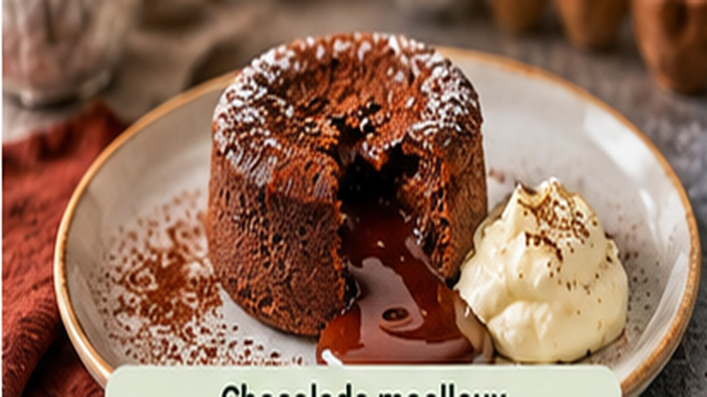

Met zelfgemaakte aardbeiensaus, amandelschaafsel en limoen

521 kcal⏱️ 20 minGemakkelijkVeggieDessert
Ingrediënten
2 kant-en-klare chocolademoelleux (klaar om te bakken) of 50 g pure chocolade + 30 g boter + 1 ei + 25 g suiker + 15 g bloem
125 g aardbeien (vers of diepvries)
1 el suiker
½ limoen
50 g mascarpone
10 g amandelschaafsel
Bereidingswijze
Verwarm de oven voor volgens de verpakking van de moelleux (meestal 200 °C). Zelf maken? Smelt chocolade en boter, klop ei en suiker luchtig, spatel alles samen met de bloem en verdeel over 2 ingevette ovenvormpjes.
Bak de moelleux 10–12 minuten: de buitenkant moet stevig zijn, de kern nog smeuïg.
Rooster het amandelschaafsel goudbruin in een droge pan.
Kook de aardbeien met de suiker en een scheutje limoensap 5 minuten tot een saus en pureer eventueel grof.
Roer de mascarpone los met wat limoenrasp.
Serveer de warme moelleux met een lepel mascarpone, de aardbeiensaus en het amandelschaafsel.
Voedingswaarden (per portie):
Calorieën: 521 kcal
Gebaseerd op het gelijknamige HelloFresh-recept. Hoeveelheden en bereiding zijn zelf uitgewerkt en kunnen afwijken van het origineel. Voedingswaarden gelden per portie.